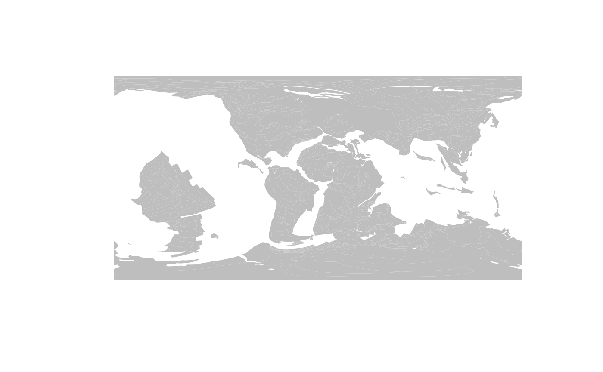
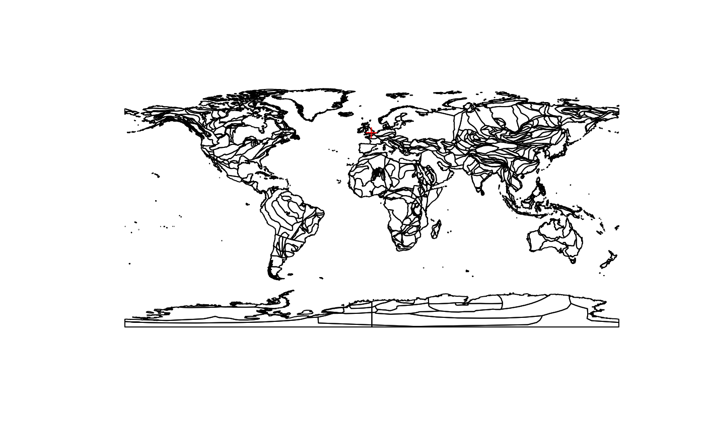
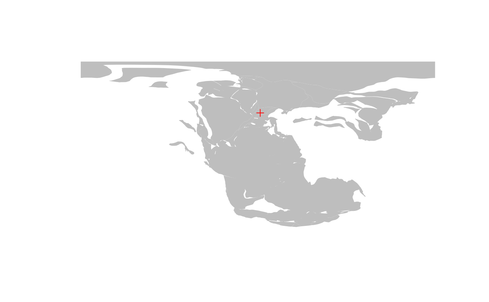
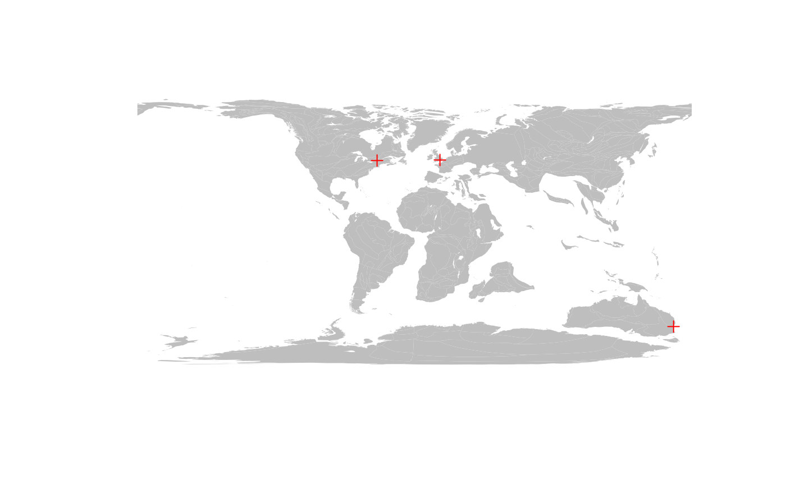
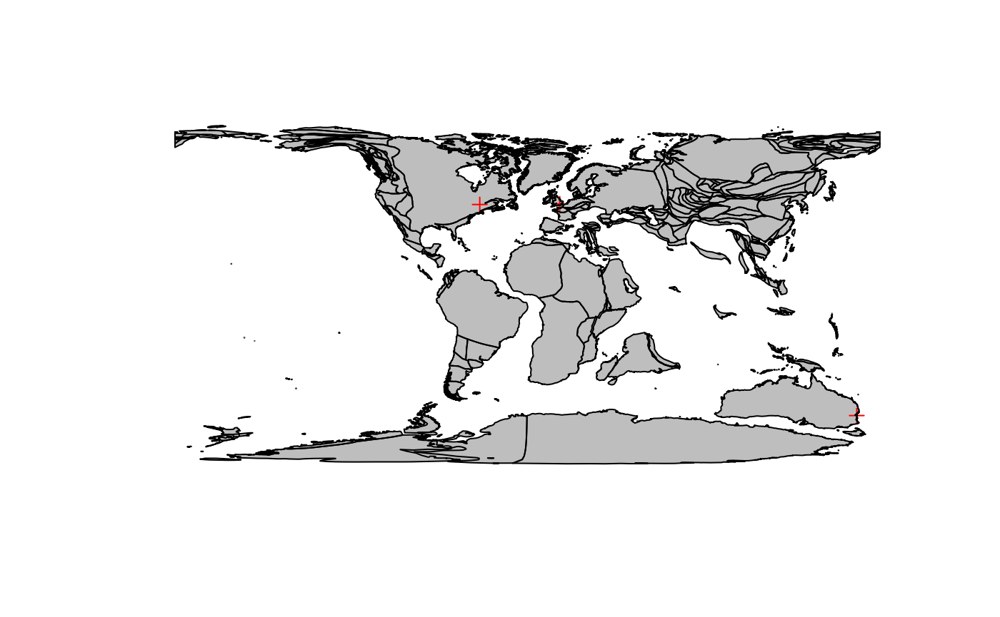
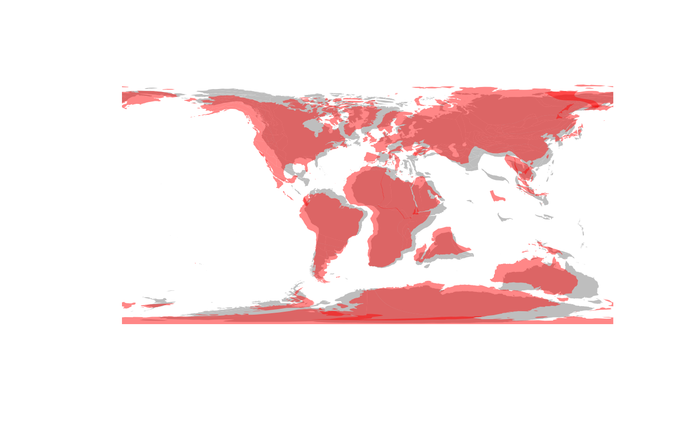

Out of the box, the package relies on the GPlates Web Service (GWS), an online service that executes paleogeographic rotations using data provided in URLs. rgplates (1) sends the data to the GWS, which (2) calculates paleocoordinates, and then (3) rgplates reads in the returned result. For this online method, you have to be connected to the internet.
To start, you have to attach the package:
library(rgplates)
#> Loading required package: sf
#> Linking to GEOS 3.8.0, GDAL 3.0.4, PROJ 6.3.1; sf_use_s2() is TRUEWhen attached, rgplates automatically loads the Simple Features for R (sf) package, a standard R package used for processing vector spatial data.
Reconstructing plates
All paleocoordinate rotations are executed with the reconstruct() function. The default model used by this is the model of the PALEOMAP project, developed by C. Scotese. (If you look at the reference of reconstruct(), you can see that by default model="PALEOMAP").
Every tectonic model relies on plates, which are rotated on the surface of Earth. The plate positions can be reconstructed to any age that the model covers. The present-day positions of the plates can be queried with the reconstruct() function, with the string "plates" passed as the first argument, and the target age set to 0 (in Ma).
pl0 <- reconstruct("plates", age=0)
pl0
#> Simple feature collection with 501 features and 0 fields
#> Geometry type: POLYGON
#> Dimension: XY
#> Bounding box: xmin: -180 ymin: -90 xmax: 180 ymax: 90
#> Geodetic CRS: WGS 84
#> First 10 features:
#> geometry
#> 1 POLYGON ((-155.2068 19.5404...
#> 2 POLYGON ((-77.6715 24.7979,...
#> 3 POLYGON ((-77.6715 24.7979,...
#> 4 POLYGON ((-71.9396 20.9241,...
#> 5 POLYGON ((-78.3856 27.3354,...
#> 6 POLYGON ((-180 90, 180 90, ...
#> 7 POLYGON ((164.2599 89.0123,...
#> 8 POLYGON ((-106.0379 21.2018...
#> 9 POLYGON ((-112.1621 28.3617...
#> 10 POLYGON ((-108.7002 23.7579...The rgplates package relies on sf to handle vector spatial data - like the plates. You can do anything with this that you normally can with and sf object: manipulate it, change its map projection, export or use it for calculations. These data are in standard equirectangular projection, registered with longitude and latitude data.
You can plot the distribution of plates with the plot() function. To focus on the spatial data and not the attributes of the features (which are technical in nature), you can plot the geometries of this object.
plot(pl0$geometry)Setting the age argument allows you to access the state of the plate tectonic configuration at past points in time. age accepts dates in millions of years. To reconstruct the position of the plates at around the Triassic/Jurassic boundary (approx. 200Ma), you have to set the age argument to 200:
pl200 <- reconstruct("plates", age=200)
pl200
#> Simple feature collection with 142 features and 0 fields
#> Geometry type: POLYGON
#> Dimension: XY
#> Bounding box: xmin: -180 ymin: -77.0625 xmax: 180 ymax: 90
#> Geodetic CRS: WGS 84
#> First 10 features:
#> geometry
#> 1 POLYGON ((17.3375 17.8127, ...
#> 2 POLYGON ((-19.2369 72.1231,...
#> 3 POLYGON ((-19.3706 71.9604,...
#> 4 POLYGON ((-19.3706 71.9604,...
#> 5 POLYGON ((-2.4637 32.5774, ...
#> 6 POLYGON ((-19.7326 72.67, -...
#> 7 POLYGON ((-19.7326 72.67, -...
#> 8 POLYGON ((-19.6809 73.003, ...
#> 9 POLYGON ((-18.0301 72.7282,...
#> 10 POLYGON ((-18.6014 71.6729,...You can plot the results in a similar way:
plot(pl200$geometry)Note that unlike the result for the present day (0Ma), the oceanic plates are not returned for the past plate configuration. (Most models do not return the oceanic plates, this is a characteristic of the PALEOMAP model)
Again, both the pl0 and the pl200 objects are sf-class objects. You can customize their plotting as you would for any other sf object - for instance setting a fill color for the polygons and not plotting their boundaries.
plot(pl200$geometry, col="gray", border=NA)
Individual locations
This is nice, but plotting the plates on their own has only so much use. The true use of reconstruct() is the ability to calculate the paleocoordinates of present-day locations for a given age.
Single present-day point
Let’s consider the location of London (here it is on Google maps)! Either in the URL, or with the user interface of Google maps, you can find that the coordinates of the city center are around 51.52°N (latitude) and 0.38°W (longitude). To figure out where the city was at the Triassic/Jurassic boundary you need to: (1) register these coordinates in R; and (2) provide them to the reconstruct() function.
Note that we are dealing with global-scale, approximate coordinates here. For more precise results, always make sure that the CRS of the points is matching the CRS of the maps (including ellipses)!
Because with the usually used equirectangular projection the x-axis of plotting become longitude, and the y axis becomes latitude, we usually register the coordinates in the order of longitude first, and latitude second (with easting longitudes and northing latitudes registered as positive values).
To make this structure absolutely clear, it is best to register coordinates as 2-column matrices, with longitude being the first, and latitude the second column:
# the coordinates
london <- c(-0.38, 51.52)
# make it a matrix
londonMat <- matrix(london, ncol=2, byrow=TRUE)
# add column names (optional)
colnames(londonMat) <- c("long", "lat")
londonMat
#> long lat
#> [1,] -0.38 51.52Since the coordinate reference system (CRS) of the maps is longitude-latitude, you can use these coordinates directly to indicate the positionx of the city on the present-day map using points() - in this case with red plus signs:

Paleocoordinates of a single locality
Finding the paleocoordinates of such localities is as easy as calculating those of the plates. You have to use the matrix that you defined earlier (londonMat) as the first argument, of reconstruct() (where "plates" was given earlier), and provide a target age in million years:
londonMat200 <- reconstruct(londonMat, age=200)
londonMat200
#> paleolong paleolat
#> [1,] 2.3267 38.1654The result of this calculation is a similar matrix: now including the paleolongitude and paleolatitude columns. If you provide coordinates as a plain matrix, coordinates are inferred to be longitude and latitude.
You can visualize this the same way, as you visualized the present-day position of the location:

Paleocoordinates of a multiple localities
If you want to reconstruct multiple locations, all you need to provide is more rows in the matrix. For instance, if you also want to calculate the positions of Sydney, AU (33.85°S, 151.11°E) and Montréal (CA) (45.52°N, 73.61°W), you need to add these in a similar fashion.
# coordinates of the two other cities
sydney<- c(151.17, -33.85)
montreal<- c(-73.61, 45.52)
# all cities in a single matrix
cities<- rbind(london, sydney, montreal)
#optional column names
colnames(cities) <- c("long", "lat")
cities
#> long lat
#> london -0.38 51.52
#> sydney 151.17 -33.85
#> montreal -73.61 45.52Now that we have a matrix of longitudes and latitudes, all we need to do is use this as the first argument of the reconstruct() function:
cities200 <- reconstruct(cities, age=200)
cities200
#> paleolong paleolat
#> [1,] 2.3267 38.1654
#> [2,] 79.1755 -60.6703
#> [3,] -20.8903 26.0878Note that the order of entities remains the same. We can plot these the same way similar to a single city.
# the background map
plot(pl200$geometry, col="gray", border=NA)
# the reconstructed cities
points(cities200, col="red", pch=3)
Present-day coastlines
Some models the (PaleoMAP model included) allow you to access reconstructed positions of the present-day coastlines, which might help you orientate yourself better with the reconstructed plates. You can get these data if you pass the string "coastlines" as the first argument of the reconstruct() function:
coast200 <- reconstruct("coastlines", age=200)
coast200
#> Simple feature collection with 1684 features and 0 fields
#> Geometry type: POLYGON
#> Dimension: XY
#> Bounding box: xmin: -180 ymin: -75.177 xmax: 180 ymax: 90
#> Geodetic CRS: WGS 84
#> First 10 features:
#> geometry
#> 1 POLYGON ((45.0875 -59.7758,...
#> 2 POLYGON ((50.5953 -57.2655,...
#> 3 POLYGON ((50.2727 -57.5174,...
#> 4 POLYGON ((45.7112 -63.0616,...
#> 5 POLYGON ((47.2433 -62.503, ...
#> 6 POLYGON ((46.1895 -63.1115,...
#> 7 POLYGON ((47.3493 -62.5483,...
#> 8 POLYGON ((46.3363 -62.9012,...
#> 9 POLYGON ((51.8124 -57.6803,...
#> 10 POLYGON ((45.5484 -63.5128,...This returns an sf-class object, similar to the plates. You can visualize these with plot() and draw them on top of the other maps, but you have to set the add=TRUE, otherwise a new plot will be created.
# the background map
plot(pl200$geometry, col="gray", border=NA)
# the reconstructed cities
points(cities200, col="red", pch=3)
# the coastlines
plot(coast200$geometry, add=TRUE)
Other reconstruction models
If you look into the Details of the reference of reconstruct(), you will see that the model argument can be set to other character strings besides "PALEOMAP". These indicate other models that are accessible via the GPLates Web Service. For instance, if you want to execute the same calculations to reconstruct the position position of the plates at 200Ma, with the Seton et al. 2012 model, all you have to do is set model="SETON2012":
pl200seton <- reconstruct("plates", age=200, model="SETON2012")
pl200seton
#> Simple feature collection with 169 features and 0 fields
#> Geometry type: POLYGON
#> Dimension: XY
#> Bounding box: xmin: -180 ymin: -90 xmax: 180 ymax: 90
#> Geodetic CRS: WGS 84
#> First 10 features:
#> geometry
#> 1 POLYGON ((24.0748 11.0834, ...
#> 2 POLYGON ((1.7994 52.0389, 2...
#> 3 POLYGON ((-4.8284 60.475, -...
#> 4 POLYGON ((-13.9214 54.9585,...
#> 5 POLYGON ((5.0225 49.7257, 4...
#> 6 POLYGON ((-15.5502 47.7084,...
#> 7 POLYGON ((12.1789 33.7875, ...
#> 8 POLYGON ((180 86.7543, 180 ...
#> 9 POLYGON ((-180 84.8695, -18...
#> 10 POLYGON ((10.5413 35.9903, ...You can compare this with the PaleoMAP model, by plotting this result on top of that with some transparency (e.g. a semi-transparent red, in HTML RGBA: "#FF000077"):
plot(pl200$geometry, col="gray", border=NA)
plot(pl200seton$geometry, col="#FF000077", add=TRUE, border=NA)
You can see that the the two reconstructions differ quite a bit, which becomes more apparent as we go back in time. Also, with the transparency, you can see how the plates overlap in convergent zones.
Disadvantages of the online method
Although it is easy to set up, the online method has several limitations. For more complete control over the rotations you might want to try out the offline method (see Tutorial 3 about the Offline Method).
If want to stick with the online method, you need to be aware of these limiting factors:
Rounding and data quantity
The data for the online method are passed to the GWS through URLs, which imposes some technical limitations to rotations. The first limitation is that the ages have to be rounded to integers, which might affect the quality of your results.
The second potential issue is that the amount of data that can be transmitted is somewhat limited. This works fine for several hundred points, but for rotating thousands of coordinates, you definitely need to work with the offline method instead.
The offline method can handle ages like 17.24 Ma without problems, and an arbitary amount of data.
Pre-built models
Although the online method is easy to set up, it uses-pre defined models to actually execute the rotations. If you cwant to use customized, or other models, which are not yet implemented in the GWS, you will need to use the offline method.
Internet connection
Since the calculations are not performed on your computer, but by the servers that host the GWS, you cannot use this method if you have no internet connection. Also, if you think about reproducibility, it is easy to see that you have no control over whether this service remains usable in the future - and neither can we.
There are docker containers that allow you to instantiate the GWS, which might help with this issue - but if you really want to make sure that your code remains reproducible - you might want to try the offline method instead.